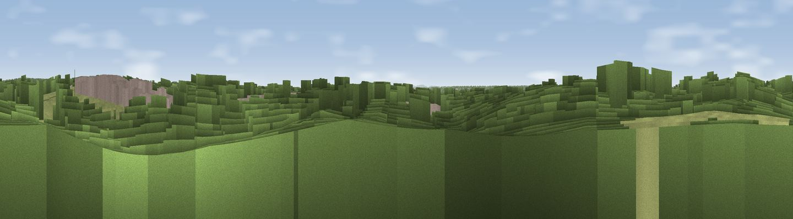

Viewpoint near Butlocks Heath
#42240 in England · top 79% of its area beats it · near Butlocks HeathWhere it is
The exact computed spot (SU 45902 09581). Click the marker for map links.
The view, rendered

A 360° render of this exact spot computed from the terrain model, tree cover and land cover — summer colours, afternoon light, calibrated against photographs of famous viewpoints. Real trees, hedges and buildings will differ in detail.
The panorama
Grey silhouette: terrain skyline in each direction (720 bearings, Earth curvature and refraction included). Dashed green: skyline with trees (+15 m) and buildings (+8 m) as obstacles. Blue strip: how far the ground is visible on each bearing.
Where the view opens
Wedge length = distance to the farthest visible ground on that bearing (vegetation-aware). Rings at 10, 25 and 50 km.
What fills the view
42% woodland · 31% grassland · 19% built-up · 4% bare ground · 3% water · 1% cropland
Angular shares of the visible panorama (visual magnitude), not map area. Landscape diversity 0.58 (0–1 Shannon).
Key numbers
More beautiful places nearby
The staircase of upgrades: each row has a higher view potential than everything closer. Driving times are estimates from straight-line distance, calibrated against real road routing — check an actual route before setting out.
| Place | Direction | Drive | Score |
|---|---|---|---|
| Viewpoint near Lower Swanwick | ENE · 3 km | ~8 min | 42.4 |
| Viewpoint near Knowle | E · 9 km | ~18 min | 44.9 |
| Viewpoint near Upton | NW · 12 km | ~22 min | 46.3 |
| Crockerhill | E · 12 km | ~22 min | 49.8 |
| Stephen's Castle Down | NE · 14 km | ~26 min | 52.0 |
| Viewpoint near Owslebury | NNE · 15 km | ~27 min | 52.3 |
| Viewpoint near Droxford | ENE · 16 km | ~28 min | 61.7 |
| Viewpoint near Southwick | E · 18 km | ~31 min | 74.3 |
50.88390, -1.34885 · source: osm viewpoint · position refined by local search. Computed location — check access rights before visiting.